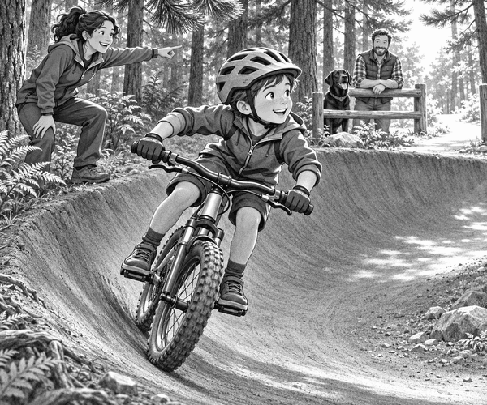

Tom rolled his bike to the start of Pine Loop.
Scout, his black Labrador, waited behind the wooden rail with Dad.
Scout gave one happy bark. It sounded like, “Go, Tom!”
Coach Jo checked Tom’s helmet and brakes.
“Today you can earn your owl trail badge,” she said.
Tom grinned. Then he saw Badger Bend.
The corner rose beside the trail like a wall of earth.
“Do I have to ride up there?” Tom asked.
“You ride around it,” said Jo. “It is called a berm.”
Bike fact: A berm is a banked corner. Its sloping earth helps support a bike’s tyres as the rider turns.
Tom pushed off.
He pedalled towards the bend. It grew taller and taller.
Tom stared at his front tyre.
He squeezed his brakes too hard.
Wobble! Wiggle! Stop!
Tom put one foot down before the corner.
“Badger Bend wins,” he sighed.
Jo shook her head. “That was only your first try.”
They walked around the bend together.
Jo pointed to a bright patch of trail beyond it.
“Your bike often goes where your eyes look,” she said. “Look through the turn towards the exit.”
Tom practised on a small bank first.
He kept his pedals level. He looked ahead. He rolled smoothly around.
“Again,” said Tom.
The next try felt even better.
Riding fact: On a rough turn, level pedals can give the rider steady feet and help keep the low pedal away from the ground.
Now Tom returned to Badger Bend.
He took two calm breaths.
He rolled in at a steady speed.
The wall of earth came close.
Tom wanted to look down.
But he found the bright patch beyond the turn.
His head turned. His shoulders followed.
The tyres hummed against the firm bank.
Round he went.
Then the trail opened in front of him.
Tom was through!
He rode over the final little bumps and crossed the finish line.
Scout bounced behind the rail. Dad cheered.
Coach Jo handed Tom a wooden owl badge.
“Badger Bend did not get smaller,” she said.
Tom smiled. “No. I learned where to look.”
1. What was Badger Bend?
2. Where did Tom look as he rode around it?
3. How did the sloping earth help his bike?